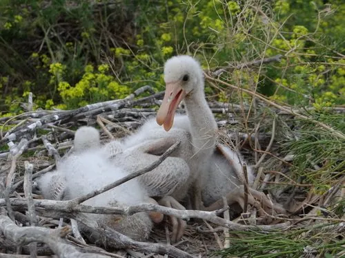

鸟类 · 动物界
白琵鹭 Platalea leucorodia

全身雪白、喙扁平如琵琶的大型涉禽，常在浅水中左右摆动喙部滤食小鱼虾，繁殖期头后长出长冠羽。
- 分类
- 门脊索动物门纲鸟纲目鹈形目科鹮科属琵鹭属
- 栖息环境
- 湖泊、沼泽、河滩、水田与沿海滩涂等浅水湿地，常与其他鹭类混群
- 地理分布
- 欧洲、非洲和亚洲广泛分布，中国北方有繁殖、南方越冬
- 保护级别
- IUCN 无危（LC）；中国国家二级保护动物
物种志
白琵鹭体长 80–93 cm，体重 1.1–2 kg，翼展 120–135 cm。全身羽毛洁白，最醒目的特征是又长又扁、末端膨大呈琵琶状的喙，喙呈灰黑色，脸部裸露的皮肤为黄色至红色，腿黑色。繁殖期枕部长出长长的白色冠羽，胸前也染上黄色，姿态十分优雅。
白琵鹭分布于欧洲、非洲和亚洲，中国北方的新疆、内蒙古等地有繁殖种群，南方各地有越冬记录。它们栖息在湖泊、沼泽、河滩和沿海滩涂，觅食时把琵琶状的喙伸入浅水左右扫动，靠触觉夹住小鱼、虾、昆虫和甲壳类。繁殖期常与鹭类混群，在高树或芦苇丛中营巢，每窝产卵 3–5 枚，孵化 24–25 天。由于湿地减少和人为干扰，白琵鹭在中国被列为国家二级保护动物。
形态与习性
- 食性小鱼、虾、昆虫、甲壳类和水生无脊椎动物
- 体长80–93 cm
- 体重1.1–2 kg
- 翼展120–135 cm
- 繁殖每窝 3–5 枚卵，孵化 24–25 天
- 寿命野外约 10–15 年
- 喙形长而扁，末端膨大呈琵琶状
趣味知识
- 白琵鹭的喙扁平如琵琶，末端膨大，是它滤食的“工具”。
- 觅食时它把喙伸入浅水左右扫动，靠触觉夹住小鱼虾。
- 白琵鹭常与苍鹭等鹭类混群营巢，形成热闹的鹭鸟林。
- 繁殖期头后会长出长长的冠羽，胸前也染上黄色。